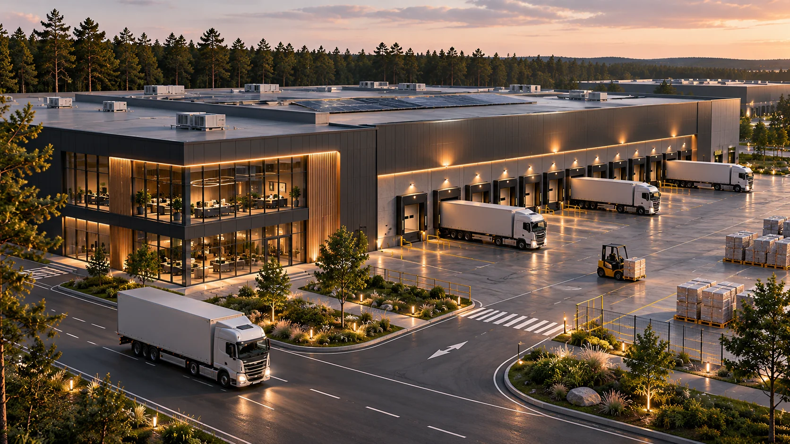

Находим задачу
Заказчик, собственник участка или партнёр формулирует потребность, сроки, регион и ориентировочный бюджет.
Объединяем строительные, инженерные, проектные и производственные компетенции для совместной работы над заказами и развития территорий.
Одна компания может отлично выполнять строительные работы, другая — проектировать, третья — вести инженерные сети, четвёртая — обеспечивать комплектацию. Консорциум помогает соединить эти возможности вокруг конкретного заказа.

Иллюстрация — архитектурная концепция, а не подтверждённый реализованный объект консорциума.
Заказчик, собственник участка или партнёр формулирует потребность, сроки, регион и ориентировочный бюджет.
Подбираем участников по подтверждённому опыту, доступным ресурсам и нужной специализации.
Уточняем объём работ, распределение ответственности, договорную модель, смету и порядок контроля.
Решения по совместной работе принимаются участниками сообща. Конкретные роли и обязательства согласуются и закрепляются для каждого проекта.
Работы выполняют конкретные ответственные компании; сроки, качество и документация проверяются по договору.
Успешный опыт создаёт основу для новых заказов, территорий и совместных инициатив.
Новые кварталы, общественные пространства, частные резиденции и промышленные объекты требуют разных знаний. Мы предлагаем среду сотрудничества, в которой компетенции встречаются с реальными задачами заказчиков.
Смысловой ориентир — материалы инженерно-технологического альянса: «Объединяться, чтобы сообща находить идеи, создавать новые проекты, инвестировать и обучаться». Это источник идеи кооперации, а не заявление о юридической или организационной связи МосПромСтроя с альянсом.
Представьте специализацию, реализованные объекты, регион работы, команды и производственные возможности.
Представить компанию ↗Расскажите об объекте, стадии проекта и задачах, для которых требуется команда.
Обсудить проект ↗Предложите площадку или объект под развитие, реконструкцию либо строительство.
Предложить площадку ↗Приоритетный ориентир на старте — заказы порядка 10–50 млн рублей. Рассматриваем и другие проекты по составу и доступности компетенций. Участие и обязательства оформляются отдельно по каждому заказу.